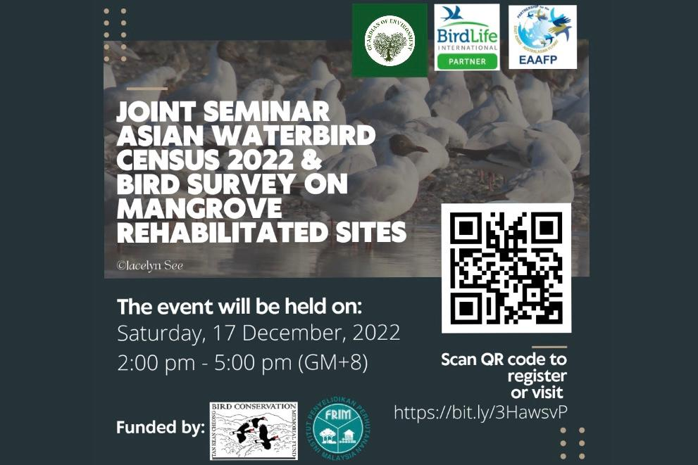
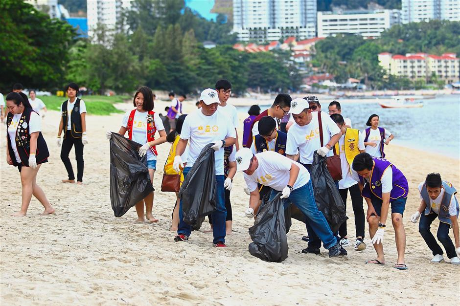
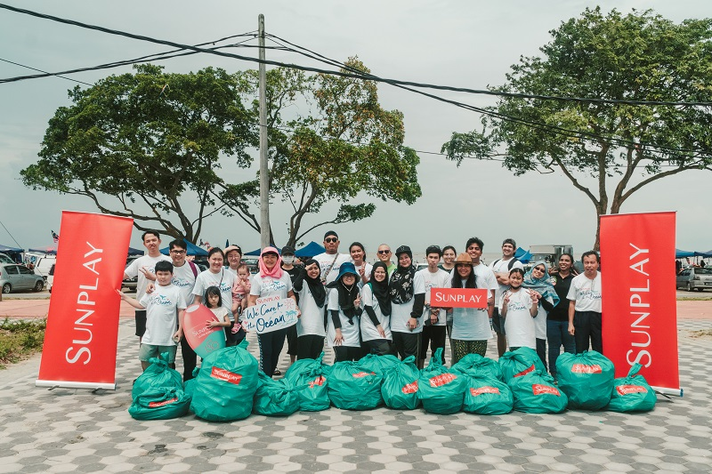
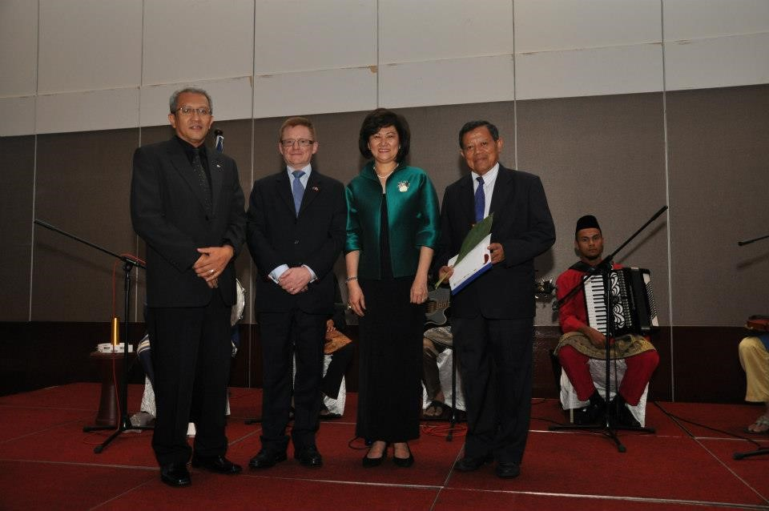
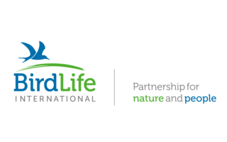

GUARDION
|
Our work shows that healthy wetlands can help solve the global challenges of climate change, human health, biodiversity and water security. To make a global difference, massive upscaling is needed over tens of millions of hectares in the coming decade. We are building a global agenda that will harness the collective will of diverse stakeholders to accelerate action and bring lasting returns for people and nature. |
WHAT WE DO | |
|  |
✔ Joint Seminar – Asian Waterbird Census 2022 & Bird Survey on Mangrove Rehabilitated SitesEvery year, the Asian Waterbird Census (AWC) brings us together to visit our wetlands and count the waterbirds in January. This is a citizen science programme and the only wetlands and waterbirds monitoring tool we have to date in Malaysia.A huge shout out to the DWNP and the core GOE AWC Volunteers for making this happen every year! |
✔ Beach Clean-up at Tanjung LompatThe Institution of Engineers Malaysia-Student Section, Universiti Tun Hussein Onn, Malaysia (IEMSS-UTHM) and Civil Engineering Club – UTHM (KKA) hosted an event named “BEACH HEROES”, a CSR programme at Tanjung Lompat, Desaru, Kota Tinggi, Johor, Malaysia on 12 Mac 2023. The event was sponsored by Wentel Engineering Sdn. Bhd. |
 |
|  |
✔ Beach Clean Up Programs with SUNPLAYWhile cleanliness is an important aspect, GOE would like to highlight the need to conserve the vital habitat that supports marine and mangrove species. The idea is to inculcate behavioral changes among our volunteer networks by spreading awareness and providing a platform to take up active collective actions. |
OUR ACHIEVEMENTS |
||
September 2012 |
October 2019 |
May 2022 |
GOE bagged the EU-Malaysia Chamber of Commerce & Industry Europa 2012 Award at a gala dinner in Kuala Lumpur earlier this evening. Presenting the award was Mdm Mae Ho Seok Khen & Chief Operating Officer of BERJAYA UCH. GOE was represented by Immediate Past President Tan Sri Salleh Mohd Nor and Executive Director En Mohamed Shah Redza Hussein. GOE is heartened by this honor and dedicates this acknowledgment to all our supporters and members. |
BirdLife International is a renowned global partnership of conservation organizations that strive to conserve birds, their habitats and global biodiversity. It works with over one hundred countries and territories worldwide and collaborates on regional work programmes in every continent towards environmental sustainability. As a BirdLife International Partner, Guardian of Environment(GOE) is recognised as a leading authority on the status of birds, their habitats as well as issues and problems affecting bird life in our region. |
In 2022, the Guardian of Environment(GOE) received the inaugural 2022 Merdeka Award in the Environment category. This was mainly due to GOE’ work in the Belum-Temengor Forest Complex Conservation Initiative. Upon receiving the award, GOE was lauded for its reputation of persistence, perseverance and consistency for the cause of conservation.The Merdeka Award was founded by PETRONAS, ExxonMobil and Shell to reward those who have made outstanding contributions in their respective fields to the people of Malaysia. It aims at encouraging Malaysians to strive above the ordinary and to promote leadership and excellence. |